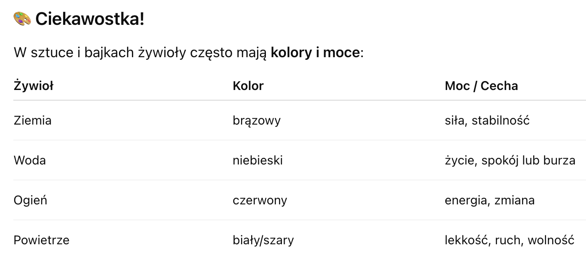
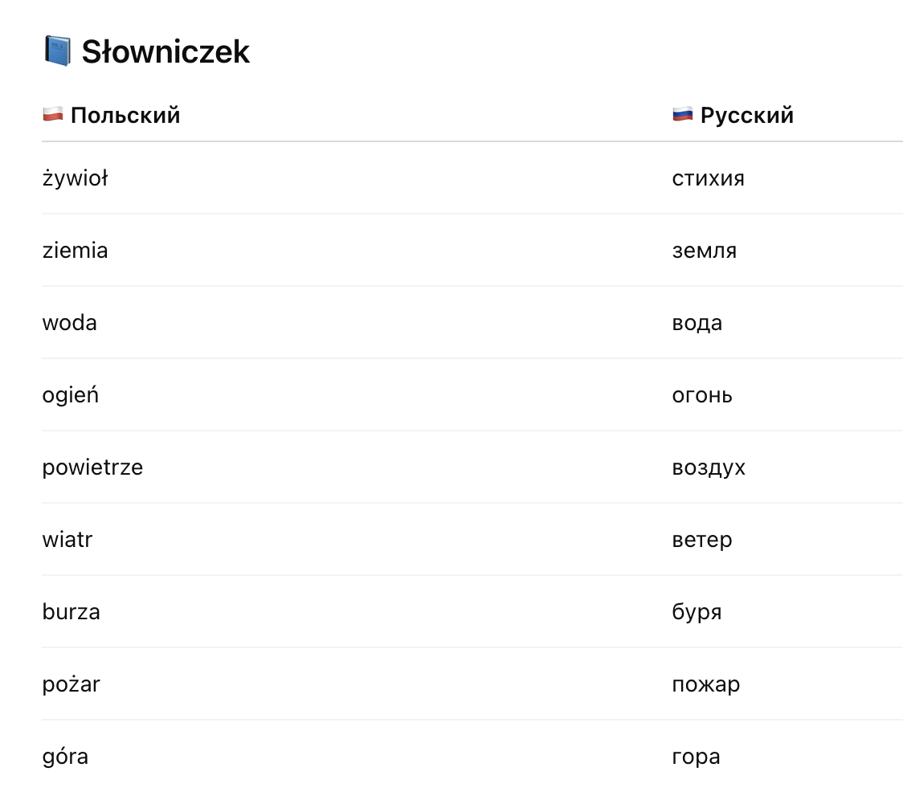

Przyroda > Przyroda nieożywiona > Cztery żywioły >
Przyroda nieożywiona
🌍🔥💧💨 Cztery żywioły
(Четыре стихии)
💬 1. Co to są żywioły?
Что такое стихии?
Żywioły to siły natury, które człowiek obserwował już в dawnych czasach.
Стихии — это природные силы, которые люди изучали с древности.
Считалось, что всё в природе состоит из 4 живых сил:
👉 Ziemia (Земля), Woda (Вода), Ogień (Огонь), Powietrze (Воздух)
🌍 ZIEMIA – Земля
- To wszystko, po czym chodzimy
(Это всё, по чему мы ходим) - Daje rośliny, kamienie, piasek
(Даёт растения, камни, песок) - Jest ciężka, stała, twarda
(Тяжёлая, твёрдая, устойчивая)
Przykład: góra, skała, pole, las
Пример: гора, скала, поле, лес
💧 WODA – Вода
- Płynie, jest mokra i potrzebna do życia
(Течёт, мокрая, необходима для жизни) - Może być spokojna lub niebezpieczna (powódź!)
(Может быть спокойной или опасной — наводнение)
Przykład: rzeka, morze, deszcz, jezioro
Пример: река, море, дождь, озеро
🔥 OGIEŃ – Огонь
- Grzeje, świeci, ale też może palić i niszczyć
(Греет, светит, но может сжигать и разрушать) - Symbol energii i siły
(Символ энергии и силы) - Jest ciężka, stała, twarda
(Тяжёлая, твёрдая, устойчивая)
Przykład: ognisko, kominek, pożar, słońce
Пример: костёр, камин, пожар, солнце
💨 POWIETRZE – Воздух
- Niewidoczne, ale czujemy je jako wiatr
(Невидимый, но мы чувствуем его как ветер) - Potrzebne do oddychania
(Необходим для дыхания)
Przykład: wiatr, burza, oddech
Пример: ветер, буря, дыхание
🧠 Dlaczego warto znać żywioły?
Зачем знать стихии?
- Pomagają zrozumieć przyrodę
- Uczyli się o nich starożytni Grecy, Egipcjanie
- Żywioły pojawiają się w bajkach, mitach i filmach

